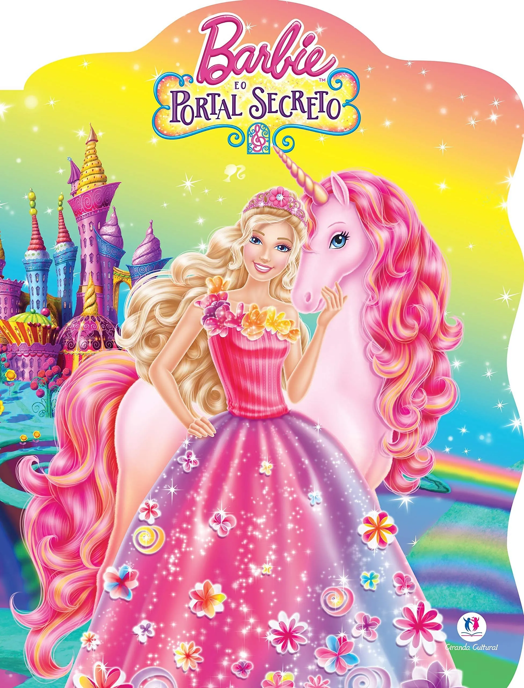

Barbie- A Princesa & a Pop Star

Barbie: A Princesa e a Pop Star acompanha duas jovens muito diferentes que vivem vidas completamente distintas, mas compartilham o mesmo sonho de encontrar seu próprio caminho. Tori é uma princesa que vive no reino de Meribella e, apesar de gostar de sua vida no palácio, deseja ter mais liberdade para fazer o que realmente ama: cantar e dançar. Já Keira é uma famosa estrela da música que sonha em conhecer a vida de uma princesa e experimentar um pouco da tranquilidade e do encanto do mundo real. Quando as duas se encontram, descobrem que são muito parecidas e decidem usar uma poção mágica para trocar de lugar. Tori passa a viver como uma pop star, enquanto Keira assume temporariamente o papel de princesa. No início, a troca parece perfeita, mas logo elas percebem que suas escolhas podem trazer consequências para o reino e para suas próprias vidas. Enquanto tentam resolver os problemas causados pela magia, Tori e Keira aprendem importantes lições sobre amizade, responsabilidade e sobre a importância de serem fiéis a quem realmente são. Juntas, elas descobrem que não precisam trocar de vida para realizar seus sonhos e que cada uma possui qualidades especiais capazes de fazer a diferença.
Barbie E O Portal Secreto
